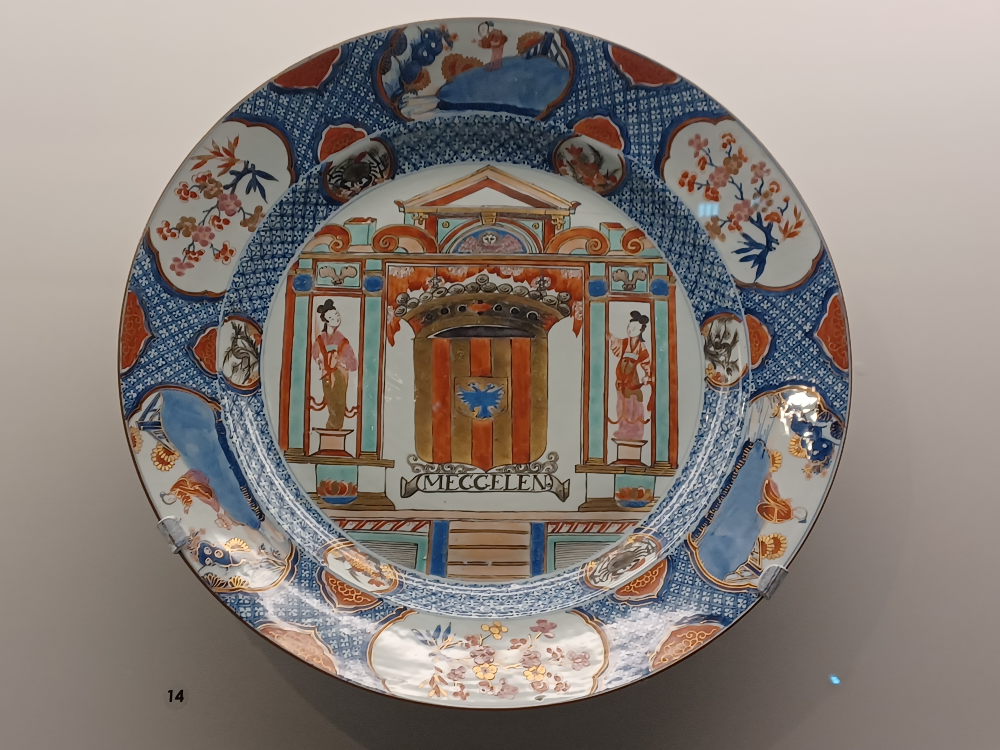

The Asian Civilisations Museum is the only museum in Asia with a pan-Asian breadth of coverage, and is Singapore's national museum that showcases Asian heritage. The museum opened in 1997 and was previously housed in the former Tao Nan School building on Armenian Street.
The permanent galleries in the museum each have their own niche focus. For instance, the galleries on the first floor speak of trade. I recently went there on a class field trip and got to learn about extensive trade networks that are visible in the design of porcelain. For instance, this charger (image below) is from the famille verte group of porcelains, which was popular during the reign of the Kangxi emperor in China. However, what's especially interesting about this porcelain is its depiction of the coat of arms of the city of Mechelen, a city in Belgium, flanked by two Chinese ladies. The cross-cultural depiction here reflects how there was a demand in the West for Chinese porcelain. It underscores the place of porcelain in the trade networks between China and the West starting from the 16th century.
Due to the changes brought about by the pandemic, ACM has also started digitising some of their exhibitions, including the Faith Beauty Love Hope - Our Stories, Your ACM exhibition which was physically held in the early start of 2021. I was fortunate to be able to visit the exhibition in person, one which I found particularly interesting because it showcased a variety of artefacts accompanied by the responses of museum staff and other stakeholders to these. One artefact and its accompanying reflection caught my attention. This artefact is called Pietà (Mother of Sorrows), and it depicts Jesus's mother being pained at the knowledge of Christ's crucifixion on the cross. The staff member who chose this artefact writes of how she cannot and does not want to imagine how Mary feels because no parent would ever want to see their children suffer. She says that when she was sick as a child, her mother would say "Sometimes I wish I could take your place so you don't have to be in pain". Now being a mother herself, she understands that and believes Mary would have said the same. For me, it was very touching to see the love of a mother for her child, and it also points me to the love God has for His children that He showed through Jesus's death on the cross for us.
Just like the National Museum, ACM has its own sophisticated selection of food places to offer! The only one I've been to is Privé which is a lovely place to hang out with good company, especially as it's situated near the Singapore river so you can enjoy the cool breeze of the day while indulging in some treats.
The Asian Civilisations Museum is located at 1 Empress Pl, Singapore 179555, and is open from 10am to 7pm daily, with the exception of Fridays when it is open until 9pm. Admission is free for Singapore Citizens and Permanent Residents. You may visit their website for more information.